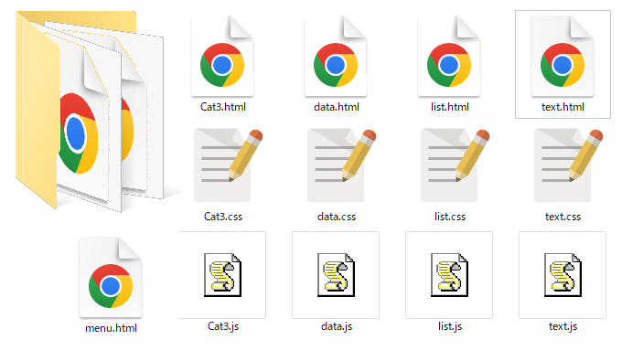

タイピング練習作成用Webアプリ

② ZIPを展開してtoolsフォルダを作成

③ toolsフォルダ内のhtmlをブラウザで開く
Text テキストエディタ
data タイピングのデータ作成
Cat3 タイピングデータの結合
filelist ファイルリスト作成
④ text.htmlを開き、type.htmlを読み込む
 編集して、名前をつけて保存する
編集して、名前をつけて保存する
⑤ Cat3.htmlを開き、type.htmlを読み込む
 ⑥ 後半をコピーして貼り付ける
⑥ 後半をコピーして貼り付ける ⑦ data.htmlを開きデータ部を作成
⑦ data.htmlを開きデータ部を作成 ⑧ 設定を合成
⑧ 設定を合成 ⑨ ctrl+A ctrl+Cでコピー
⑨ ctrl+A ctrl+Cでコピー ⑩ Cat3.htmlに貼り付け
⑩ Cat3.htmlに貼り付け ⑪ titleを入力して、Saveする
⑪ titleを入力して、Saveする